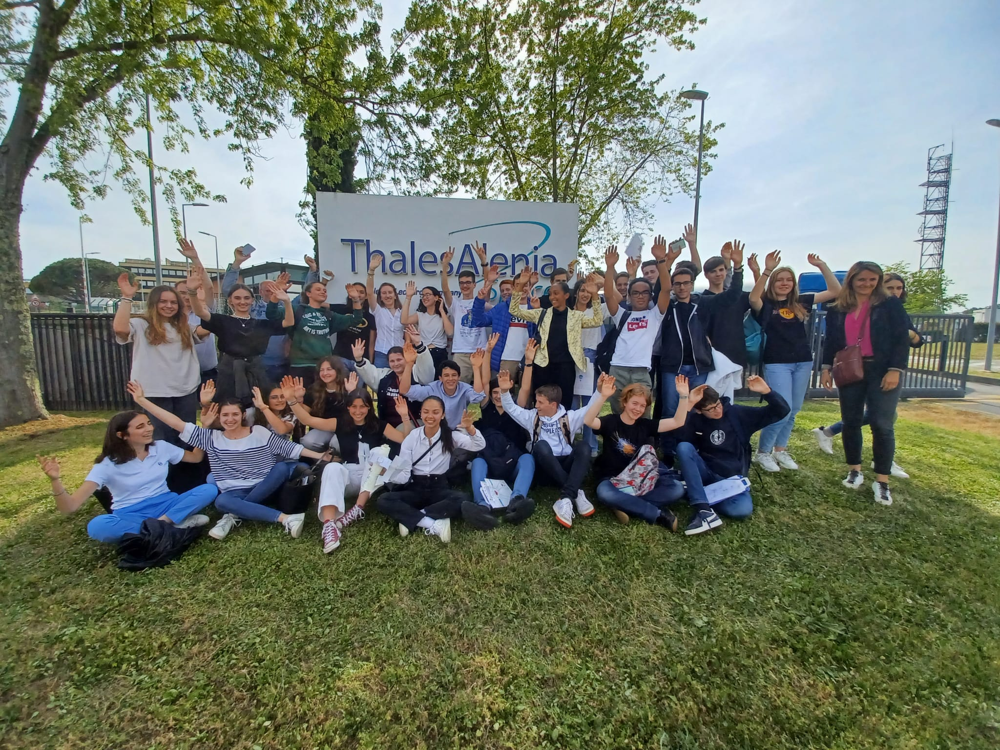
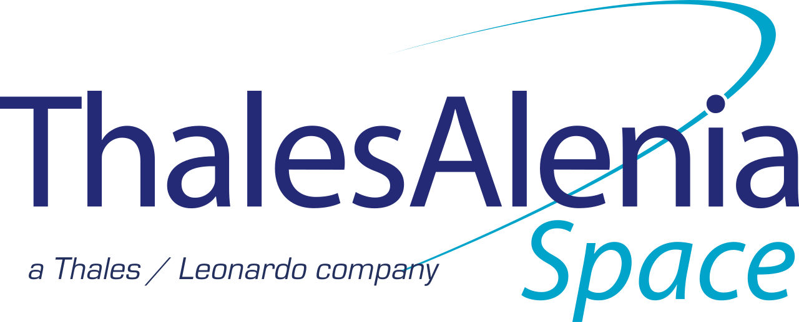
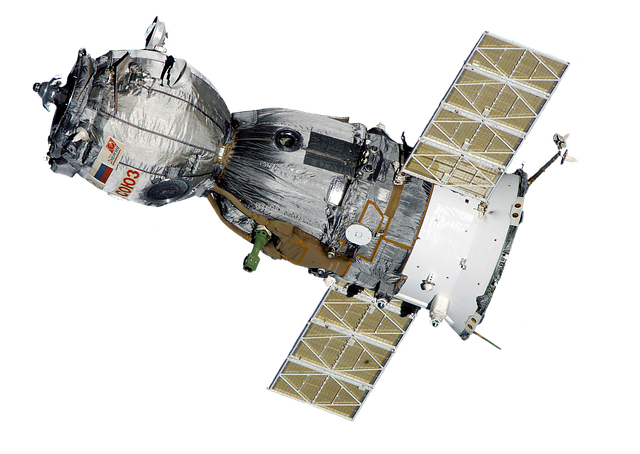
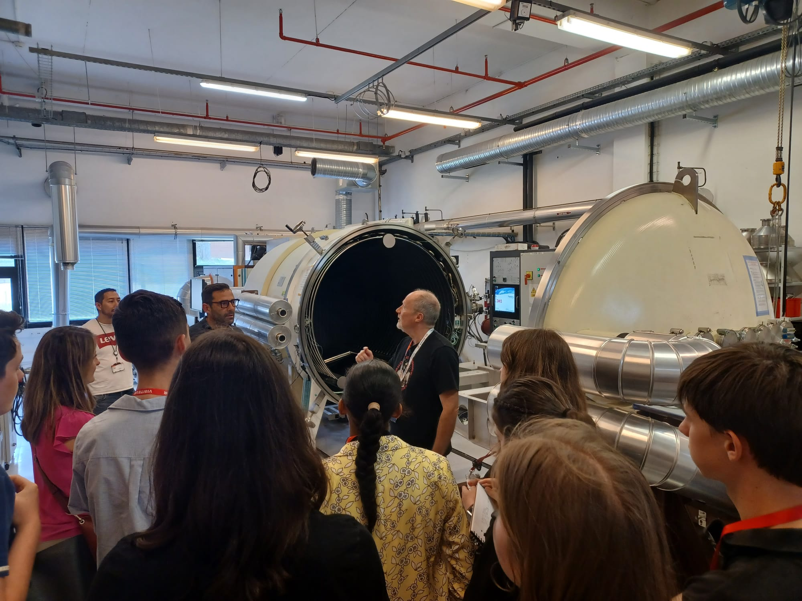
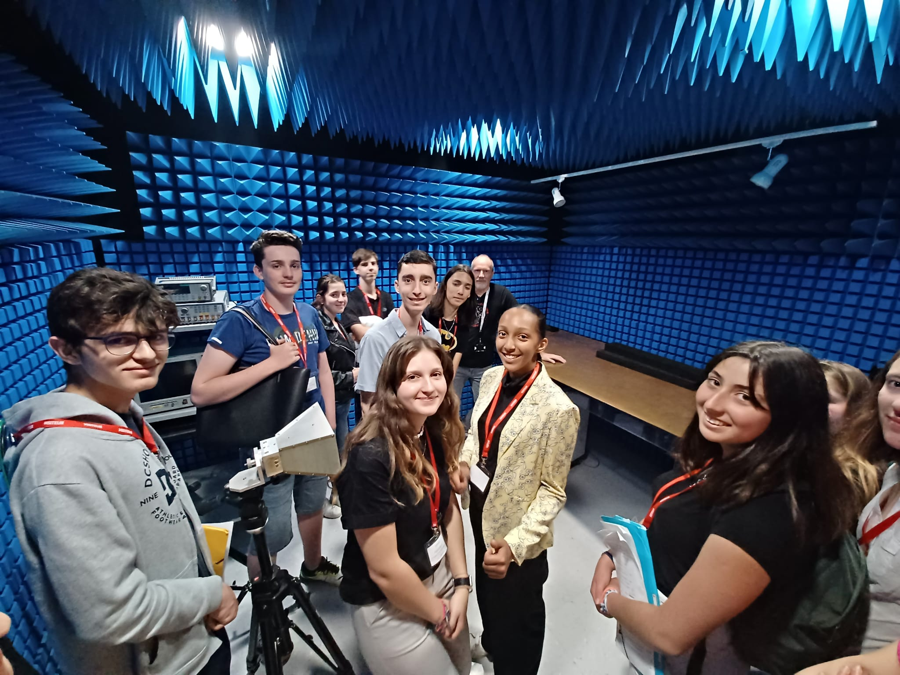
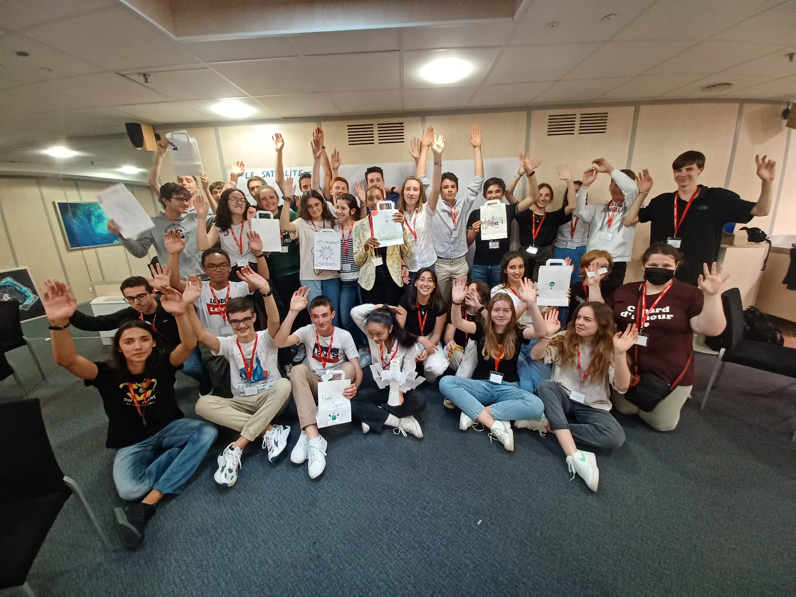
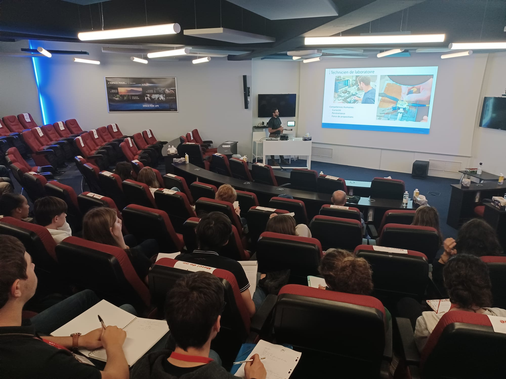
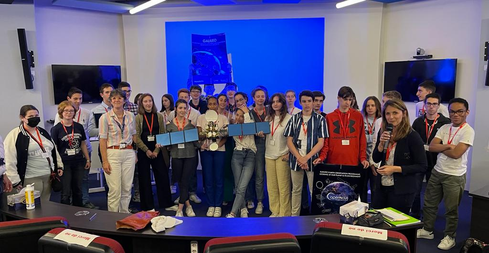

Rubrique scientifique
En partenariat avec l'UIMM, nous avons pu faire un stage chez Thalès Alenia Space. Cette entreprise spatiale et aéronautique nous a accueilli le jeudi et vendredi 12 et 13 mai. Nous avons donc fait cette classe en entreprise sur le site de Toulouse où les ingénieurs travaillent sur la partie intelligente du satellite.
|
Un satellite est un objet artificiel créé par l’homme qui gravite autour d’une planète ou d’un satellite naturel. Il peut avoir différentes fonctions telles que l’observation, la navigation, la localisation, la télécommunication… |
 |
Acronyme de Assemblage, Intégration, Tests, l’AIT désigne toute l’élaboration du satellite de la salle blanche au décollage.
Le satellite demande des précautions particulières en matière d’environnement durant sa phase d’assemblage. Cette phase est donc réalisée dans la salle blanche, une salle propre où l’atmosphère est filtrée et maintenue en légère surpression afin d’empêcher une contamination venant de l’extérieur.
La construction du satellite débute par l’assemblage du module de service qui comprend les réservoirs, les panneaux solaires, le système de propulsion et l’électronique qui va avec. La charge utile est assemblée indépendamment du module de service. Vient ensuite la délicate opération de couplage de la charge utile avec le module de service ainsi que des connexions électriques qui sont vérifiées l’une après l’autre.
C’est ensuite qu’est réalisée une longue série de tests afin de vérifier la fonctionnalité et la résistance du satellite.
De plus, les hybrides sont une technologie mêlant deux matériaux : la céramique et l’or. La combinaison de ces deux technologies permet une amélioration et un renforcement du réseau d’information.
Les tests environnementaux sont effectués sur chaque pièce individuelle du satellite avant le lancement afin de les conditionner aux contraintes de l'espace.
Au décollage, les satellites sont soumis à de nombreuses agressions : comme le vide, l'apesanteur, les rayonnements du soleil, les différences de température...
Afin de préparer le satellite à ces différentes contraintes, il est indispensable réaliser trois tests :
- tests thermiques
- tests électromagnétiques
- tests de vibrations
Une fois le satellite quasi complet, il est conduit dans une chambre à vide thermique (voir image ci-dessous), caisson de plusieurs mètres de diamètre où vont être simulées les conditions thermiques rencontrées dans le vide spatial.
Pendant plusieurs semaines, il va être exposé à des températures variant de -170°C à +120°C par pallier. A chaque pallier, une batterie de tests permet de vérifier le bon fonctionnement des différents équipements.
Le caisson à vide thermique
Avant d'assembler le satellite, les pièces sont placées dans une cage de Faraday afin d'effectuer des test d'ondes et de les mesurer.
La cage de Faraday, est une cage complètement métallique qui coupe des ondes extérieures.
Elle est revêtue de cônes absorbant en mousse hyper fréquence et carbone permettant d'absorber les ondes électromagnétiques.
Elle permet d'effectuer des essais jusqu'à 18GHz (soit la puissance subie lors d'un décollage).
La cage de Faraday avec les cônes absorbants
Les tests de vibrations consistent à simuler les chocs rencontrés par le satellite lors de l'ouverture des panneaux solaires.
Le satellite est confronté à des vibrations sinusoïdales et aléatoires durant le lancement.
Pour cela nous allons placer les différentes pièces du satellite sur une plaque vibrante afin d'observer comment se comportent les pièces face à ces vibrations.
Ensuite, une fois le test effectué, si les pièces ont résisté au choc on peut alors les assembler sur le satellite final.
La première après-midi, tous les élèves ont participé à une activité : créer le satellite du futur. Par groupe, ils ont imaginé différents satellites avec beaucoup d’imagination.
Satellite Poubelle et satellite aspirateurLe satellite poubelle est un satellite qui a pour fonction de récupérer les débris de satellite en orbite pour l’écologie (supprimer les débris qui polluent l’espace), pour l’économie (récupérer des pièces et des matériaux cher) et la sécurité (des débris pourraient entrer en collision avec des satellites ou des stations spatiales actives). Le satellite aspirateur est construit avec les mêmes principes mais au lieu de renvoyer les déchets par navettes sur terre, il aspire les déchets spatiaux IcarusIcarus est une constellation de satellite se rapprochant du soleil pour récupérer de l'énergie solaire pour réduire l’utilisation d’énergie fossile et prioriser les énergies renouvelables, cela serait une des solutions pour la sauvegarde de la planète. Satellite staying aliveCe projet consiste, grâce à une puce implantée, sur chaque être humain à géolocaliser les gens et à analyser certains facteurs de santé (ex: respiration…), on peut ainsi prévenir les accidents Satellite échange extraterrestresEchanger des matériaux ou des richesses avec des extraterrestres avec lesquels nous serions en relation pacifique dans le futur. |
Satellite EuropaIl ferait un voyage d’exploration avec pour destination une des lunes de Jupiter ‘’Europe’’ en effet cette lune sous une couche de glace épaisse contiendrait de l’eau liquide : source potentielle de la vie. Cette mission a donc pour but de déposer une sonde dans un trou foré dans la couche de glace afin d’explorer les fonds marins d'Europe et d'enquêter sur la potentielle présence de vie extraterrestre. Satellite MarsIls serviront dans les prochaines dizaines d'années à mettre en relation les colons sur mars avec les terriens afin de garder le contact avec leur planète d’origine. Grâce à ce satellite, la télévision, ainsi que les chaînes téléphoniques seront accessibles même sur Mars.  |
Cette activité a été enrichissante pour tous les E2, nous avons pu développer un esprit de groupe et cela nous a obligé à utiliser toute notre créativité.
Vendredi, nous avons assisté à différentes conférences, où les salariés nous ont présenté leur métier, leur utilité, et leurs parcours pour en arriver là.
En premier, le data scientist Marc Spigai, nous a présenté l'IA ou Intelligence Artificielle. L’IA est un outil indispensable pour les entreprises spatiales. En effet, c’est grâce à elle que les satellites peuvent se positionner correctement sur leurs orbites, et les processus industriels sont grandement optimisés et facilités.
Ensuite, le télépilote Thomas Grabie nous a expliqué l’importance des drones pour la vérification de la réception et du renvoi des ondes par les satellites.
Puis, un ancien militaire, aujourd’hui agent chef de la cybersécurité, Stéphane Descous, nous a sensibilisé sur le sujet de la cyber-sécurité. Ce sujet est très important dans le domaine spatial, autant pour préserver la confidentialité, que l’intégrité, et la disponibilité des informations. Enfin, différents parcours nous ont été présentés.
La plupart des ingénieurs de Thalès Alenia Space suivent un parcours type : Bac scientifique et/ou technologique, ensuite une Licence (et Master) ou alors un DUT et une école d’ingénieur.
Cependant, il y a de nombreuses voies pour arriver à Thalès, comme ont pu nous l’expliquer de nombreuses personnes. Ainsi il n’y a aucune formation unique et tout le monde peut oser pour y parvenir.
Pour conclure, cette classe en entreprise de deux jours nous a permis d’en apprendre plus sur les nombreux métiers du spatial, les différentes étapes de la construction des satellites, et le travail en groupe avec un délai réduit. Cela a donc été une expérience enrichissante pour toute la classe qui en est sortie ravie.